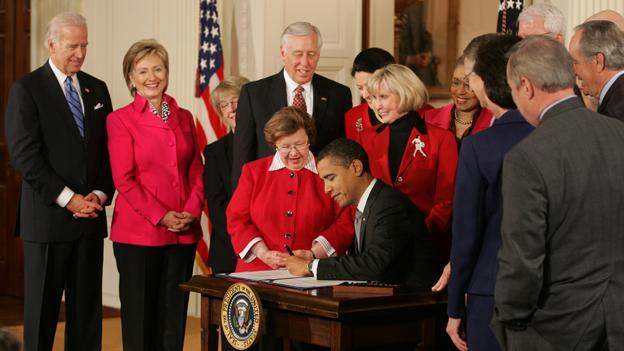

Directions: Fill in the chart as we study each part of the record. Keep this page in your notebook. You will use it again on the review day before the unit test.

| Record | Failure or claim | The answer made | The cost or result |
|---|---|---|---|
| Subprime lending and the securities, to 2007 | |||
| The freeze of September 2008 | |||
| Households in the Great Recession | |||
| The Ledbetter ruling and the act of 2009 | |||
| The health law and the two movements, 2009 to 2011 |
Writing prompt. In a paragraph, answer this question from the chart: the rescue kept the financial system from failing. Judged from the rows above, who was rescued first, who paid first, and who waited longest for the recovery? Name the rows you are using as evidence.
| Record | Failure or claim | The answer made | The cost or result |
|---|---|---|---|
| Subprime lending and the securities, to 2007 | Subprime loans to weak credit borrowers were bundled into securities graded as safe, on the assumption prices would not fall nationwide. The FCIC later concluded the crisis was avoidable. | No answer at the scale of the risk. The Federal Reserve, held by the Commission to be empowered to set lending standards, did not stem the loans. | Prices fell from 2006, borrowers stopped paying, the securities lost value, and no firm could value its holdings. |
| The freeze of September 2008 | Fannie Mae and Freddie Mac were taken over, Lehman Brothers failed on September 15, 2008, and credit froze. Officials said the system stood days from collapse. | The Stabilization Act created TARP, up to seven hundred billion dollars in stages. The Federal Reserve cut rates nearly to zero and lent widely. | The system did not fail. Critics charged the firms whose lending built the collapse were saved while executives kept their pay. |
| Households in the Great Recession | The recession ran December 2007 to June 2009. Unemployment reached 10.0 percent in October 2009; about 8.7 million jobs were lost (Bureau of Labor Statistics). | The stimulus of February 2009, about eight hundred billion dollars in spending and tax cuts, was meant to restart the economy through consumers' hands. | Millions of homes were foreclosed, prices fell roughly a quarter to a third (Case Shiller), and household wealth fell by trillions. The recovery was the slowest of the postwar era. |
| The Ledbetter ruling and the act of 2009 | The Supreme Court ruled in 2007 that Ledbetter's claim was filed too late, because the clock ran from the original pay decision, not her discovery of the gap. | The Ledbetter Act, signed first on January 29, 2009, makes each paycheck paid under a discriminatory decision a new unlawful practice. | Workers who discover a pay gap years later can still file. Congress stated the ruling had impaired protections it established. |
| The health law and the two movements, 2009 to 2011 | The Affordable Care Act required coverage, barred denial for prior illness, and expanded Medicaid, passing without a vote from the other party. The Tea Party named the federal government as the enlarged power; Occupy named corporations and finance. | The law itself, then electoral pressure from the Tea Party, which reshaped Republican politics, and protest from Occupy, which carried the ninety nine percent into national speech. | About twenty million more people held coverage by 2016 (Department of Health and Human Services). The law was upheld in its central requirement in 2012 and argued over in every election after. |
Writing prompt. Strong answers keep the chart's order. The banks and the credit system were rescued first, in the autumn of 2008, because officials judged the whole economy stood behind them. Households paid first and longest, in jobs, foreclosures, and wealth that returned more slowly than output, the gap both protest movements argued from in opposite directions. Credit any answer that names its rows and keeps the sequence straight.